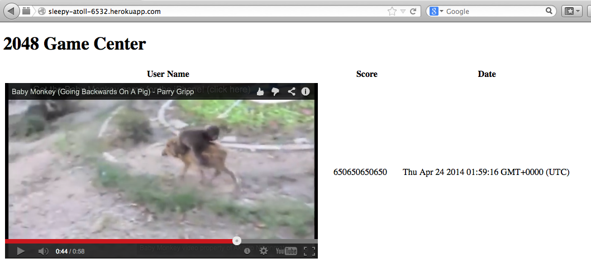
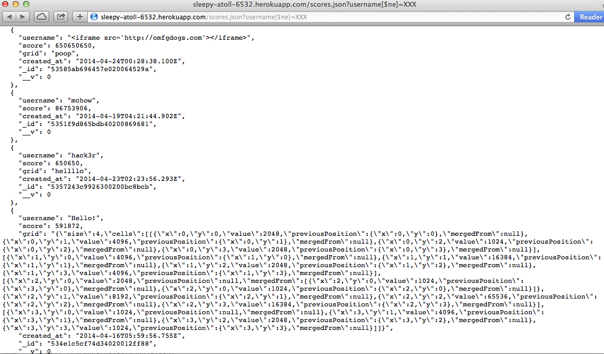

Location of Vulnerability:
Any GET API - in this case, the root and /scores.json
Severity: Very High
This threat is severe due to the ease of exploitation and the potentially far-reaching effects of an attack. Not only can an attacker post anything to the site, but he/she could also redirect visitors to a harmful website. All data in the GET APIs could be tampered with, meaning that anyone relying on the API could also be affected by an attack.
Description:
I found this issue by black box testing the application using the cURL tool. As I made a similar application, I had an idea that curling malicious code could be an effective attack.
Cross-site scripting allows the attacker to inject Javascript or HTML via the POST API -- in this case, submit.json. Because user input is not validated sufficiently, my attack succeeded in embedding a video of a baby monkey riding backwards on a pig. This video now shows up for anyone who accesses the homepage of the web application.
I simply ran the following command:
curl --data "username=<iframe width='560' height='315' src='//www.youtube.com/embed/5_sfnQDr1-o?autoplay=1' frameborder='0' allowfullscreen></iframe>&score=650650650650&grid=babymoney!" http://sleepy-atoll-6532.herokuapp.com/submit.json
And the result:
Resolution:
We can resolve this issue by sanitizing/validating user input. This could be done a variety of ways. My solution includes installing a Node.js module called validator, and calling a function called sanitize. Here are the relevant lines of code:
var sanitizeInput = require("validator").sanitize;
And then, in all POST APIs, call this function along with the Javascript escape function. For example:
username = sanitize(request.body.username).escape();
Location of Vulnerability:
scores.json GET API
Severity: Moderate
By injecting a few characters, we can perform a GET request that queries the entire database and returns everything. In this case, the homepage of the web application already returns all of the scores in the database. However, if the database contained other fields or sensitive information, this could be an even more severe threat.
Description:
This type of injection is possible by inserting a few characters into the query, which tell the database to search for everything not equal to the search parameter. For example, going to the URL
http://sleepy-atoll-6532.herokuapp.com/scores.json?username[$ne]=XXX returns every document in the database that does not have the username XXX.
Example:
Resolution:
__v, that seems to be unused in this web application. While the present of this extra key in all documents is not a security vulnerability by itself, it is very inefficient.